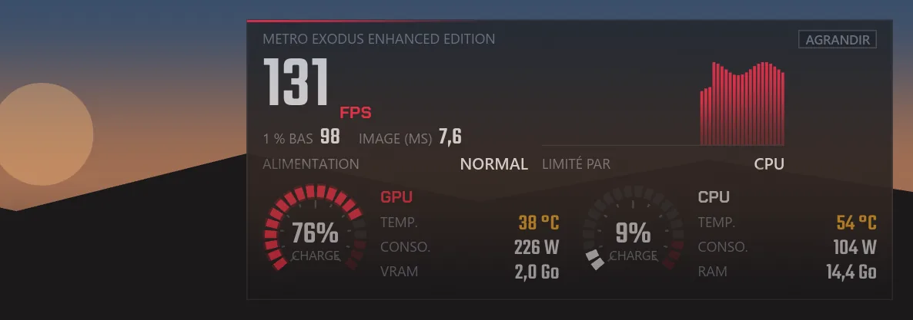
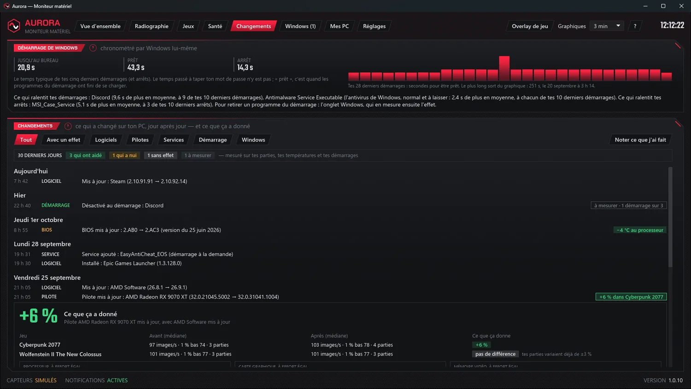
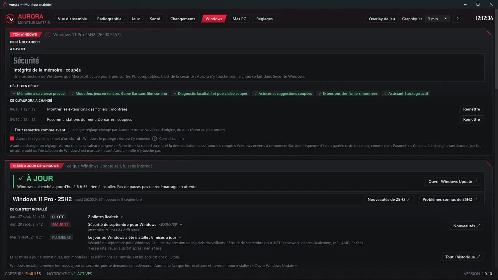
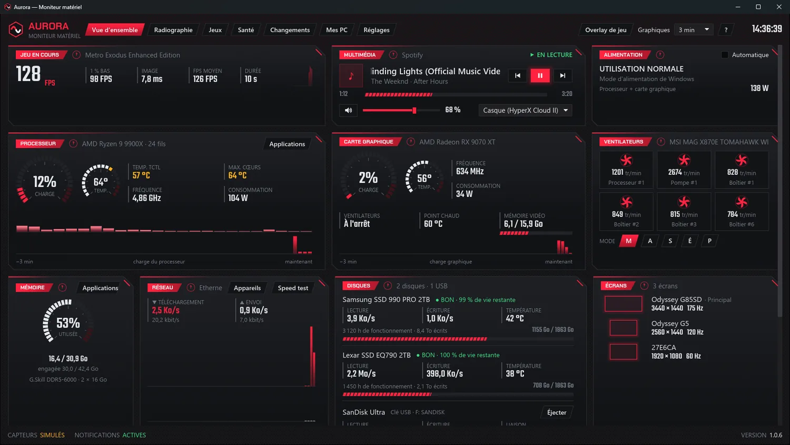
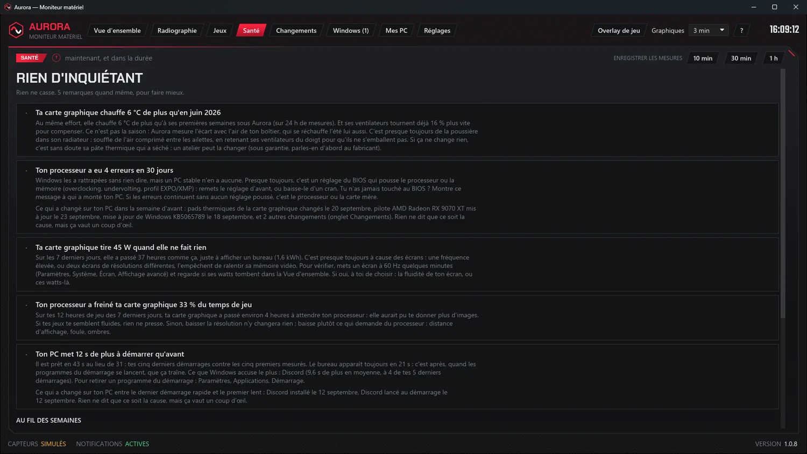
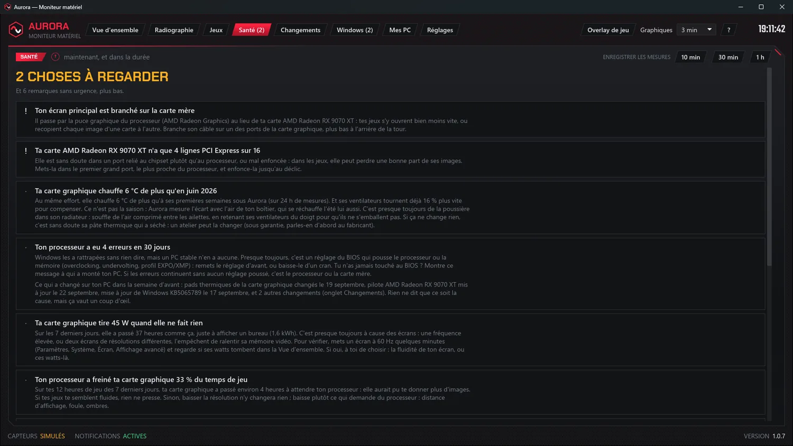
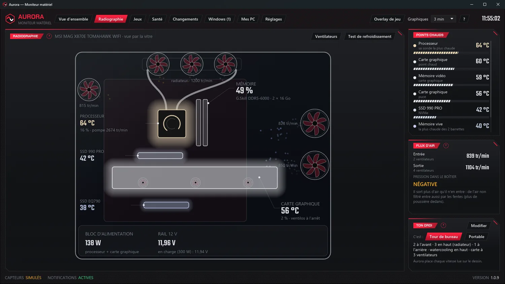
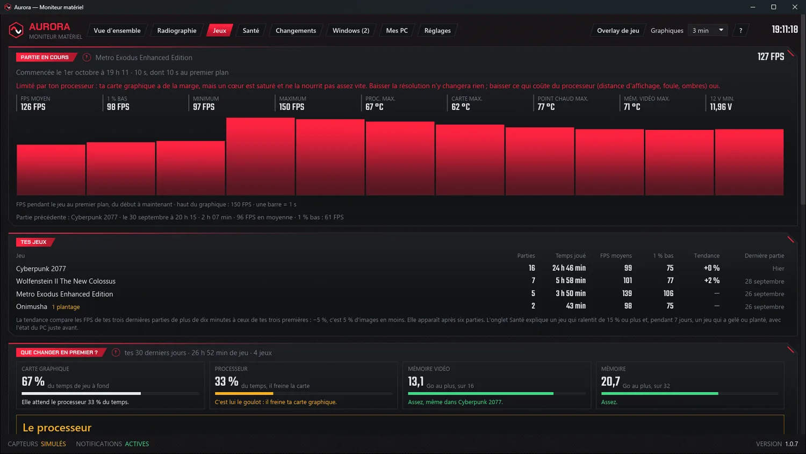
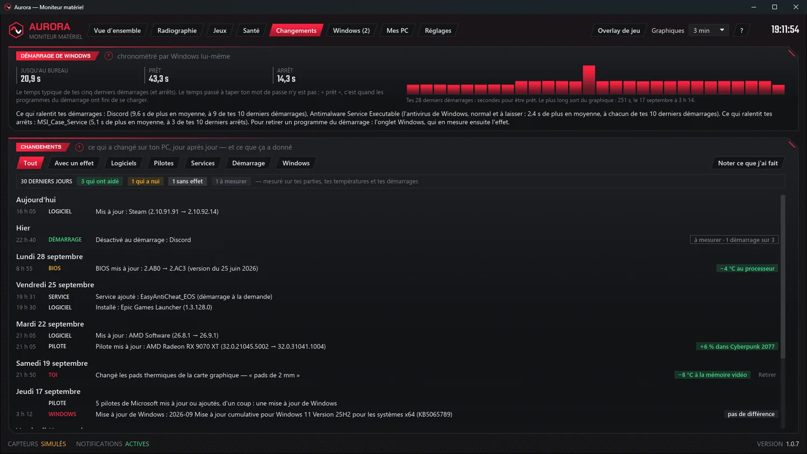

Aurora, le moniteur matériel qui parle en mots simplesAurora, the hardware monitor that speaks plain words
Tout ce qu'il faut pour parler d'Aurora : des textes à copier, des captures en haute résolution, le logo et des vidéos. Tout est libre d'utilisation pour présenter Aurora. Everything you need to talk about Aurora: copy-ready text, high-resolution screenshots, the logo and videos. Everything here is free to use to present Aurora.
En brefAt a glance
Les faits à retenir.The key facts.
- NomName
- Aurora — Moniteur matérielAurora — Hardware Monitor
- Version
- 1.0.7, 1er octobre 20261.0.7, October 1, 2026
- PrixPrice
- Gratuite, sans publicité, sans compte · sa licenceFree, no ads, no account · its licence
- SystèmeSystem
- Windows 10 et 11, 64 bits · 9,7 MoWindows 10 and 11, 64-bit · 9.7 MB
- ConfianceTrust
- Installeur signé électroniquementDigitally signed installer
- LanguesLanguages
- Français et anglaisFrench and English
- Vie privéePrivacy
- Aucune mesure envoyée ; Internet seulement pour le numéro de version, et quand on le demandeNo readings sent; the Internet only for the version number, and when you ask
- CréateurCreator
- Denis, au QuébecDenis, in Quebec
- Site et contactWebsite and contact
- auroraapp.ca · contact@auroraapp.ca
Textes à copierCopy-ready text
À reprendre tels quels, ou à adapter.Use them as they are, or adapt them.
En une phraseIn one sentence
Aurora est un moniteur matériel gratuit pour Windows qui surveille ton PC en direct — températures, ventilateurs, disques, réseau, FPS en jeu — et te dit en mots simples s'il va bien. Aurora is a free hardware monitor for Windows that watches your PC live — temperatures, fans, drives, network, in-game FPS — and tells you in plain words whether it's doing well.
En un paragrapheIn one paragraph
Aurora est un moniteur matériel gratuit pour Windows 10 et 11. Elle affiche en direct les températures, les ventilateurs, les disques, le réseau et les FPS en jeu dans un tableau de bord clair, et surtout, elle les comprend : son onglet Santé dit en mots simples ce qui cloche et quoi faire, qu'il s'agisse d'un disque usé, d'un ventilateur arrêté, d'une erreur que Windows a notée en silence ou d'un écran branché au mauvais endroit. Elle garde aussi la trace de ce qui a changé sur le PC, pour relier un problème à sa cause probable, et mesure l'effet de chaque changement — un pilote, un BIOS, une mise à jour — sur les jeux, les températures et le démarrage. En jeu, elle dit ce qui limite les FPS : la carte graphique, le processeur ou un bridage. Sans compte ni publicité, elle n'envoie aucune mesure, et elle parle français et anglais. Aurora is a free hardware monitor for Windows 10 and 11. It shows temperatures, fans, drives, network and in-game FPS live in a clear dashboard, and above all, it makes sense of them: its Health tab says in plain words what's wrong and what to do — a worn drive, a stopped fan, an error Windows logged silently, or a display plugged into the wrong port. It also keeps track of what changed on the PC, to link a problem to its likely cause, and measures the effect of every change — a driver, a BIOS, an update — on games, temperatures and startup. In game, it tells you what limits the FPS: the graphics card, the processor or an FPS cap. No account, no ads, it sends none of your readings, and it speaks French and English.
Ce qui la distingueWhat sets it apart
Aurora ne fait pas que mesurer : elle explique.Aurora doesn't just measure: it explains.
Un bilan de santé en mots simplesA health check in plain words
Ce qui cloche, pourquoi, et quoi faire : disques, températures, ventilateurs, pile du BIOS, bloc d'alimentation, et ce que Windows note sans rien dire.What's wrong, why, and what to do: drives, temperatures, fans, BIOS battery, power supply, and what Windows logs without a word.
La vérification du montageThe build check
Un écran branché sur la carte mère ou réglé trop bas, une carte graphique dans le mauvais port : des erreurs qui ne se voient pas.A display plugged into the motherboard or set too low, a graphics card in the wrong slot: mistakes you can't see.
La machine à remonter le tempsThe time machine
Pilotes, mises à jour, programmes au démarrage : ce qui a changé sur le PC, jour après jour, relié aux problèmes.Drivers, updates, startup programs: what changed on the PC, day after day, linked to problems.
Ce qui limite les FPSWhat limits the FPS
En direct dans l'overlay : la carte graphique à fond, un cœur du processeur qui la freine, ou un bridage. Et sur 30 jours, ce qu'il faudrait changer en premier.Live in the overlay: the graphics card maxed out, a processor core holding it back, or an FPS cap. And over 30 days, what to upgrade first.
L'effet de chaque changementThe effect of every change
Un pilote graphique, un BIOS, une mise à jour de Windows, un programme au démarrage : ce qu'il a donné, mesuré tout seul avant et après sur les jeux, les températures et le démarrage.A graphics driver, a BIOS, a Windows update, a startup program: what it did, measured on its own before and after on games, temperatures and startup.
L'onglet WindowsThe Windows tab
Windows lu en entier, et réglé seulement si on le coche, par les moyens officiels : chaque réglage se remet d'un clic, et jamais les protections.Windows read in full, and tuned only if you check it, through official means: each setting goes back in one click, and never the protections.
Les jeuxGames
FPS, 1 % bas, un overlay, tes jeux au fil du temps, et les gels ou plantages expliqués avec l'état du PC juste avant.FPS, 1% low, an overlay, your games over time, and freezes or crashes explained with the state of the PC just before.
La radiographie, tour ou portableThe X-ray, tower or laptop
Le PC dessiné d'après le vrai : ses vrais ventilateurs, qu'on peut nommer, l'air qui circule, les points chauds, et la batterie d'un portable.The PC drawn from the real one: its real fans, which you can name, the air flowing through, the hot spots, and a laptop's battery.
D'un PC à l'autreFrom one PC to another
Des fichiers envoyés entre les PC de la maison, chiffrés et sans passer par Internet ; leurs mesures, celles du téléphone par un code QR, et sept touches pour le Stream Deck.Files sent between the PCs at home, encrypted and never through the Internet; their readings, the phone through a QR code, and seven Stream Deck keys.
CapturesScreenshots
La vraie Aurora, en mode démonstration. Dix-neuf captures en PNG dans chaque langue (1746 × 983, et l'overlay en jeu) : en français ou en anglais (ZIP, 9,8 Mo). The real Aurora, in demo mode. Nineteen PNG screenshots in each language (1746 × 983, and the in-game overlay): in English or in French (ZIP, 9.8 MB).









Logo
L'hexagone et son onde, sur fond transparent.The hexagon and its wave, on a transparent background.


VidéosVideos
La chaîne d'Aurora, et deux films sans son du tableau de bord à reprendre.Aurora's channel, and two silent clips of the dashboard you can reuse.
- Aurora 1.0 : le moniteur de PC gratuit, en françaisAurora 1.0: the free PC monitor (in French) (YouTube)(YouTube)
- Tout ton PC sur un seul écranYour whole PC on one screen (in French) (Short YouTube)(YouTube Short)
- La chaîne Aurora - Moniteur matérielThe Aurora channel
- Le tableau de bord en mouvement : en français ou en anglais (MP4, 8 s) ; la radiographie : en français ou en anglais.The dashboard in motion: in English or in French (MP4, 8 s); the X-ray: in English or in French.
Pour une vidéoFor a video
Filmer sans montrer ton PCFilm without showing your PC
Aurora a un mode démonstration, avec des mesures simulées et « Capteurs simulés » écrit en bas de la fenêtre. Touches Windows + R, puis : "C:\Program Files\Aurora\aurora.exe" --demo. Pas besoin de fermer ton Aurora : la démonstration s'ouvre à côté, sans droits administrateur.Aurora has a demo mode, with simulated readings and “Sensors simulated” written at the bottom of the window. Press Windows + R, then: "C:\Program Files\Aurora\aurora.exe" --demo. No need to close your Aurora: the demo opens alongside, without administrator rights.
Des idées de sujetsTopic ideas
- « Mon PC va-t-il bien ? Un logiciel gratuit me le dit en mots simples »“Is my PC OK? A free app tells me in plain words”
- « Ton écran est peut-être branché au mauvais endroit »“Your display might be plugged into the wrong port”
- « Tes températures sur ton Stream Deck, gratuitement »“Your temperatures on your Stream Deck, for free”
- « Il n'est pas programmeur, et il a créé son logiciel avec l'IA »“He's not a programmer, and he built his app with AI”
Qui fait AuroraWho makes Aurora
« J'ai longtemps monté mes propres PC, et j'ai toujours voulu savoir ce qui se passe dedans, en mots simples plutôt qu'en colonnes de chiffres. Je ne suis pas programmeur : j'ai créé Aurora en travaillant avec une intelligence artificielle (Claude, d'Anthropic). Elle écrit le code ; moi, je décide de ce qu'Aurora doit faire et je l'essaie sur mes propres machines. Je l'ai d'abord faite pour moi, puis je l'ai partagée. Elle est gratuite, et elle le restera. Pour une question ou une entrevue, écris-moi à contact@auroraapp.ca : je réponds moi-même. »“I've been building my own PCs for a long time, and I always wanted to know what's going on inside, in plain words rather than columns of numbers. I'm not a programmer: I created Aurora by working with an artificial intelligence (Claude, by Anthropic). It writes the code; I decide what Aurora should do and test it on my own machines. I made it for myself first, then shared it. It's free, and it will stay free. For a question or an interview, write to me at contact@auroraapp.ca: I answer myself.”
— Denis
Présentation à copierBio to copy
Aurora est créée par Denis, un Québécois qui monte ses propres PC depuis des années. Sans être programmeur, il la développe avec l'IA Claude : l'IA écrit le code, lui décide de ce qu'Aurora doit faire et l'essaie sur ses machines. Aurora is made by Denis, a Quebecer who has been building his own PCs for years. Without being a programmer, he develops it with the Claude AI: the AI writes the code, he decides what Aurora should do and tests it on his machines.